Like the ST3, I picked the clutch reservoir as the mounting point. This affords easy adjustment, a flat surface to mount to, and is relatively out of harms way. The box for the control itself is pretty sturdy, so in a tip over I'm pretty sure it will just come free and not do any damage.
Part of the solution is velcro When placing 2 sided stick on velcro, I was careful to not cover the screw holes on the clutch reservoir. For a street bike a velcro-only solution might be fine, but with off-road duty planned, I decided some back up for the velcro would be wise. Rather than zip ties, I used safety wire, which gives the install a cleaner look. This required drilling 4 small holes in the lid of the controller's case. I inserted 2 loops of wire through the four holes, securing the ends underneath the clutch master piston.
Wire routing was pretty easy. The connection to the battery follows the rest of the control wires down to the headstock of the frame. The connection to the vest is wrapped a few times around the bar, to take up slack. This will require the use of a 1' coiled male-male coax extension cord, but I like self tensioning slack afforded by the coiled cable, so I'm ok with this addition.
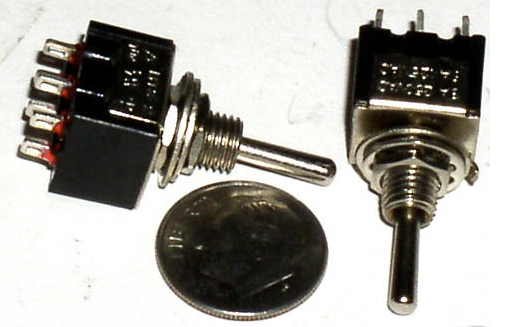
Here's where things get a bit more custom. The battery box on the 950A is pretty snug, so I didn't feel there was a lot of room for running multiple wires in to connect to power. I could have used the ACC1 or ACC2 power, but I wanted to leave those free for GPS and heated grips. I had already wired an SAE connector to the battery, to allow connection to a BatteryMinder. I decided to extend this connection to the heated grips, by converting the ring terminal end of the FirstGear wire to an SAE plug. To do this, I cut about 2' off the end of a 6' SAE extension cable. I then shortened the battery connection that came with the kit, and solder that to the piece of SAE cable. When done, I had a 3' cable that is SAE on one end, coax female on the other, with an inline fuse holder on the positive wire.
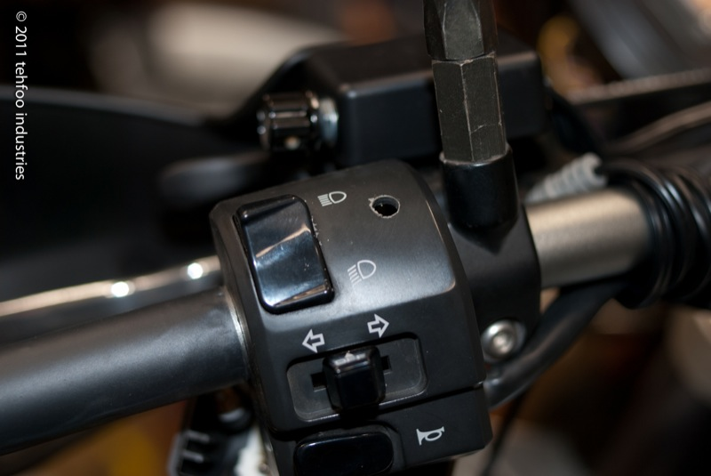
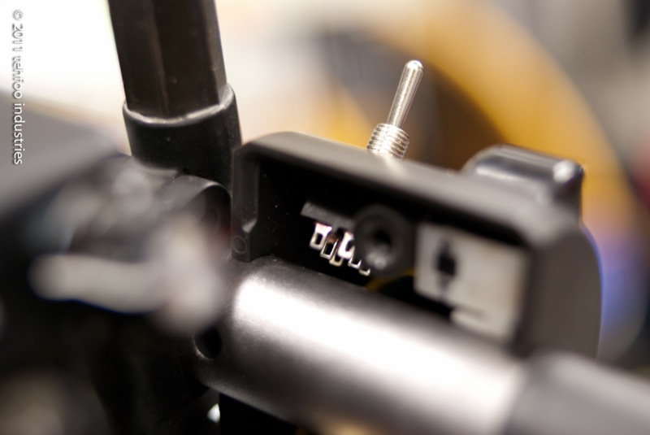
When I need to charge the bike, I just disconnect the SAE plugs, and plug the charger into the wire that's attached to the battery. When it's time to ride, I just reconnect the SAE plugs and tuck it behind the lower plastic, so you never know it's there. A bit of hassle just to save space in the battery box, but to me it was worth the small amount of soldering to make it work.
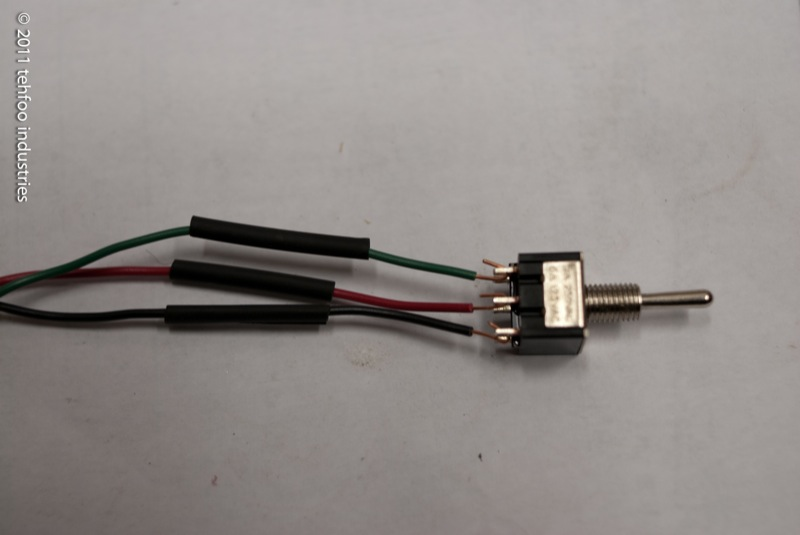
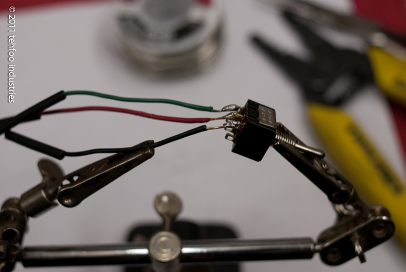
The wire runs along the coolant hose, through the frame just behind the steering head, and out into the front cowl with all the control wires. There's a bit of slack, which will make it easy to check or replace the fuse if things go funny. I took up the slack with a few folds and a zip tie, tucking the bundle up near the headlight.
The harness and controller are joined by a coax plug, which in theory would make the controller portable. I doubt I'll ever pull it off, but didn't see any harm in leaving the coax plugs in place.
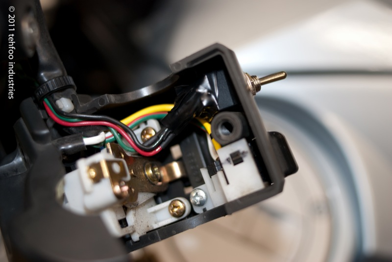
At this point I left the switch alone and routed all the wires.
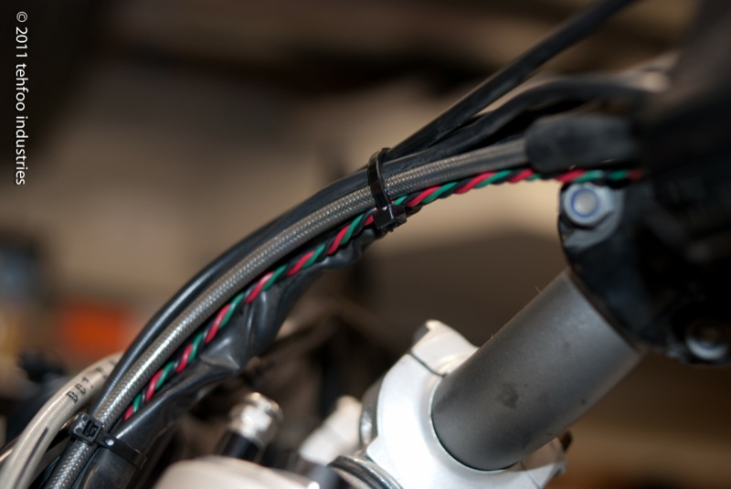
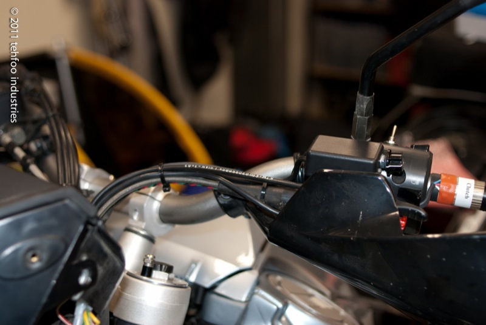
It was pretty easy to follow everything else down to the steering head, and out the
right side to where the ACC2 wires are. I decided to wire in to ACC2 (switched),
since I don't see much need in having them on when the bike is off. When I was
done routing, I sanity checked the continuity through the switch circuit. This
helped me remember which color I had wired to high (up) and low (down) on the
switch. It's not intuitive on the actual switch, when you set the toggle one
way, current flow in through the center and out through the opposite post.
Here's shot of everything once it's plugged in.
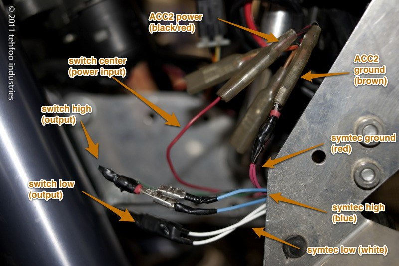
The blue from each element are paired (using the connector that came with the grips).
Same with the whites. Then blue pairs are joined to crimped male connector on the
switch's 'high' output wire. Same for the white pairs, connecting them to the
switch's 'low' output wire. The symtec ground pairs (red) are wired together
into a mail crimp connector and plugged into the ACC2 brown female. The input
wire to the switch gets a crimp male and connects to the ACC2 black/red female.
Time to fire it up and see if smoke comes out! For testing, I hooked the switch
input to ACC1 temporarily, so I wouldn't have to keep the key on while waiting
for the grips to warm up. After testing both high and low settings, put the switch
input wire back to ACC2 hot and you're good to go.
Speaking of opposite, the symtec directions are printed wrong; BLUE is HIGH,
WHITE is LOW. The diagram in the directions is labeled the opposite. If you
have any doubt, measure resistance through each color, the hot run will have more
resistance. I discovered the mixup while testing the final connections. It was
kind of funny, really. I meant to the grips for 5 min on low. Then, I forgot they
were on, and went upstairs for dinner. When I came back 45 minutes later, and had
completely forgotten I left the switch on. I casually rested my hand on what turned
out to be an extremely hot element, and scared the pants off myself.
Anyway, with things tested and high/low connected correctly, there was not much left
except to do except button things up. This is what the left switch housing looks like
when tightened down.
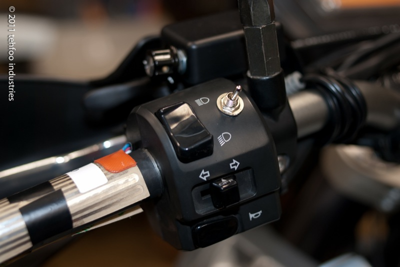
Here you can see the heating element is held temporarily in place with some e-tape.
I did that just to keep in in the right place while I sorted all the wire routing.
This is more important with the throttle side, as you want to leave a loop of wire
so the throttle can rotate back and not be restrained by the grip wiring.
The rest is dead easy. Pull the backing of the sticker side of the elements and
tack them down. Next, put some glue on your grips, and quickly slide them into
place. You might want to tape over the holes in the end of your bars where the
hand guard attaching bolts go, so you don't gum them up with glue. It's probably
best to leave the glue overnight before riding or running the grips. For glue I
used 3M Super77, but anything that can handle high temps should work.
frosting
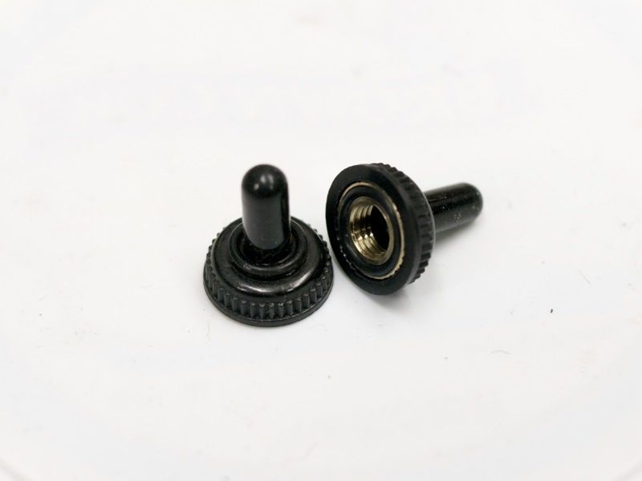
As a bit of follow up, I found (also on ebay.com) some nice rubber covers that
thread onto the mini toggle.
Before installing these, I drilled a hole for the tab on the washer that keeps
the switch from rotating in the hole. I didn't drill this all the way through,
just a millimeter or so into the plastic.
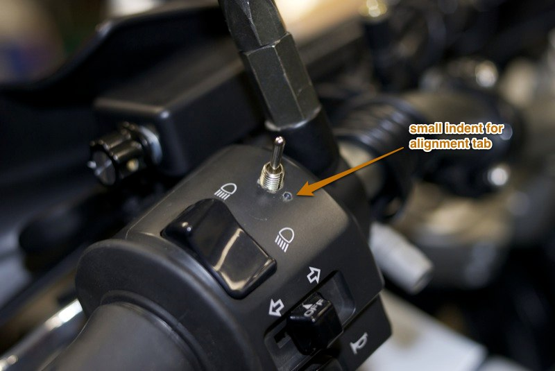
Then I put on the cover. It looks pretty tight. Not quite factory, but damn tidy, I'd say.
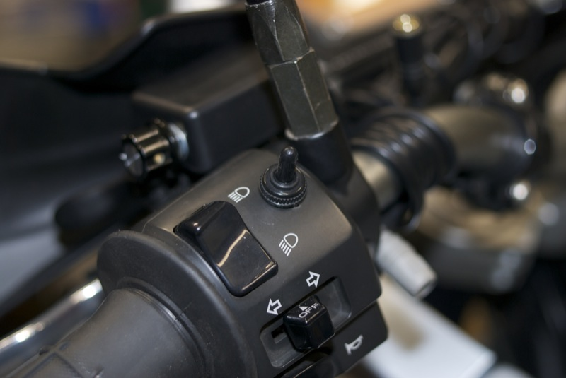
That's it. I intend to write more blather about wiring up the heat controller
for my electric vest, but that's going to wait until I have some free time.
top